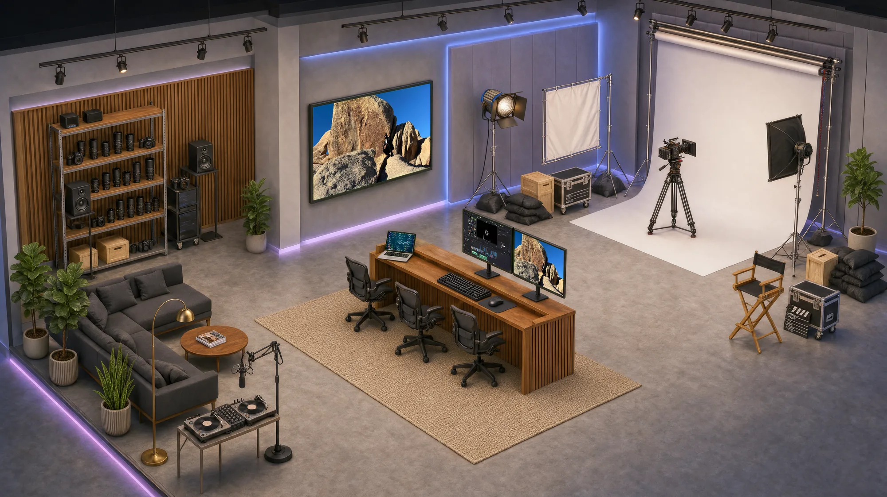

DEPARTURZ
Where your story takes off.
Web Design · Production · Post-Production
Los Angeles · Houston
Los Angeles · Houston
Hover to light it up
Scroll
In the studio

Where your story takes off.

You're talking to an assistant, not to Nate. It answers from what this site says about DEPARTURZ and will tell you when it doesn't know. Anything that needs Nate goes straight to him.